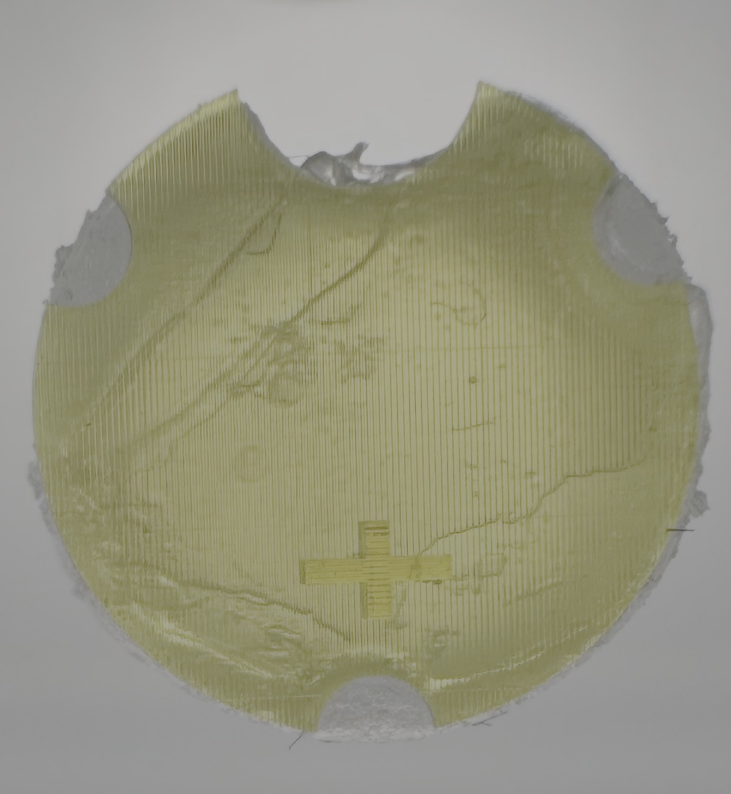

Nano/Bio Engineering
High-throughput manufacturing of in vitro muscle sheets to test mobility-restoring therapies.

Background/Origin
Neuromuscular diseases such as muscular dystrophies, sarcopenia, and ALS severely impair mobility and quality of life. Tissue engineering has emerged as an effective strategy to address these challenges by posing as drug screening specimen. MIT Raman Lab’s STAMP technology (Simple templating of actuators via micro-topological patterning) utilizes soft substrates and microgrooves to guide muscle fiber alignment. Building on this innovation, my project focuses on enabling high-throughput muscle contractility readouts by scaling up STAMP to a full 96-well plate of 2.5D muscle cultures.
Final Notes / Next Steps
Given the promising results presented in my 2025 Fall Symposium poster, I will advance this research by scaling STAMPS to a 96-well plate format to accelerate drug screening and data collection. Furthermore, I have designed a "grid" like apparatus that allows for rapid STAMP-ing, paving the road to conduct real drug screening tests with drugs like caffeine.